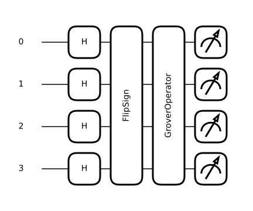

Station · search
Find the one marked box
A classical search opens boxes one at a time. This one nudges every box at once. Turn the dial to search faster — then keep turning, and watch the answer fall apart.
Amplitude of each box — tap a bar to mark it
Height is the amplitude. Probability is height squared, so the tall amber bar is the one you are overwhelmingly likely to measure.
The same state, drawn as a rotation
Every step turns the arrow by the same angle. That is why overshooting is possible — and why it is inevitable if you keep going.
Success probability against number of steps
Show the maths
Setting up the two-dimensional picture. With boxes of which are marked, split the computational basis into the unmarked states and the marked ones:
These are orthonormal, and the uniform superposition the Hadamards produce lies in the plane they span:
Define by that second coefficient. Then the starting state sits at angle from the “all wrong answers” axis:
Each step is two reflections. The oracle flips the sign of marked states, which is a reflection about ; the diffuser reflects about :
Composing two reflections whose axes differ by gives a rotation by . Applying to a state at angle from :
Measuring gives a marked item with probability equal to the squared component:
When to stop. The probability is largest when the state points along , that is when :
That square root is the whole speed-up: classically you expect to open about boxes.
Why overshooting happens. Because is a rotation by a fixed angle, nothing stops it at the target. One step past the optimum and the state has turned past and is heading back down — the success probability is periodic in , not monotone. That is exactly what the dial shows.

Hover or tap any gate to see what it does.
Inversion about the mean. The diffuser acts on amplitudes as , where is their mean. The oracle has just made one amplitude negative, barely moving the mean, so reflecting about it throws that one amplitude far above the rest. Watch the green line in the bar chart: that is .
verify/test_reference.py.